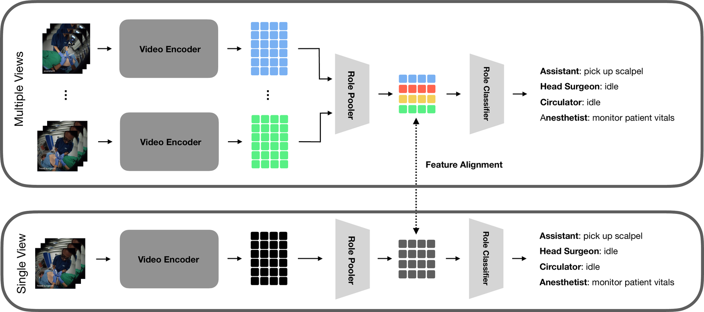

Abstract
Fine-grained understanding of operating room activity could enable workflow-aware assistance, yet remains difficult due to clutter, occlusions, limited sensing, and the need to model multiple clinicians over time. OR scene graphs provide an interpretable representation of interactions, but converting frame-wise relational predictions into temporally extended actions is challenging without explicit temporal modeling.
We introduce OR-Action, the first action-centric benchmark built on a publicly available ego-exocentric OR dataset. OR-Action defines a fine-grained, multi-role action taxonomy and generates dense action segments from ground-truth scene graph state changes. Experiments show that current scene-graph prediction methods struggle to recover temporal structure, even with graph neural networks. We therefore introduce a vision-only temporal model that outperforms graph-based methods using all available egocentric video, and a multi- to single-view feature alignment strategy that improves single-view multi-role action recognition.
Key Takeaways
- OR-Action provides dense, role-specific temporal action labels for external operating-room video.
- Rule-based scene-graph distillation converts relational state changes into 78 fine-grained action classes.
- Vision-only V-JEPA2 temporal modeling substantially outperforms graph-based pipelines on segmental F1.
- Multi-view teacher representations can improve single-view multi-role action recognition through feature alignment.
OR-Action Benchmark


Method

Results

Temporal Action Understanding
| Model | Acc | Edit | F1@0.1 | F1@0.25 | F1@0.5 |
|---|---|---|---|---|---|
| Validation | |||||
| GT + GNN | 65.19 | 48.33 | 32.08 | 30.42 | 25.42 |
| EgoExOR + rule mapping | 16.54 | 38.24 | 21.21 | 16.16 | 13.13 |
| EgoExOR + GNN* | 52.03 | 27.60 | 3.27 | 2.09 | 1.23 |
| Ours (all roles) | 61.65 | 38.24 | 39.90 | 35.47 | 25.12 |
| Test | |||||
| GT + GNN | 69.54 | 48.63 | 39.34 | 36.53 | 29.98 |
| EgoExOR + rule mapping | 17.37 | 38.28 | 21.59 | 20.45 | 18.18 |
| EgoExOR + GNN* | 58.81 | 35.22 | 4.87 | 3.37 | 2.06 |
| Ours (all roles) | 67.50 | 45.47 | 40.64 | 37.88 | 29.10 |
*We re-ran selected baselines before benchmark publication and updated these rows. The main change is non-idle frame accuracy; temporal segment metrics remain in the same range, preserving the paper's overall conclusion: scene graph prediction struggles to represent temporal behavior.
Citation
@inproceedings{oraction2026,
title = {OR-Action: Multi-Role Video Understanding with Fine-Grained Actions},
author = {Tristram, Felix and Özsoy, Ege and Benz, Christian and Walch, Marcel and Ghazaei, Ghazal and Navab, Nassir},
booktitle = {MICCAI},
year = {2026}
}